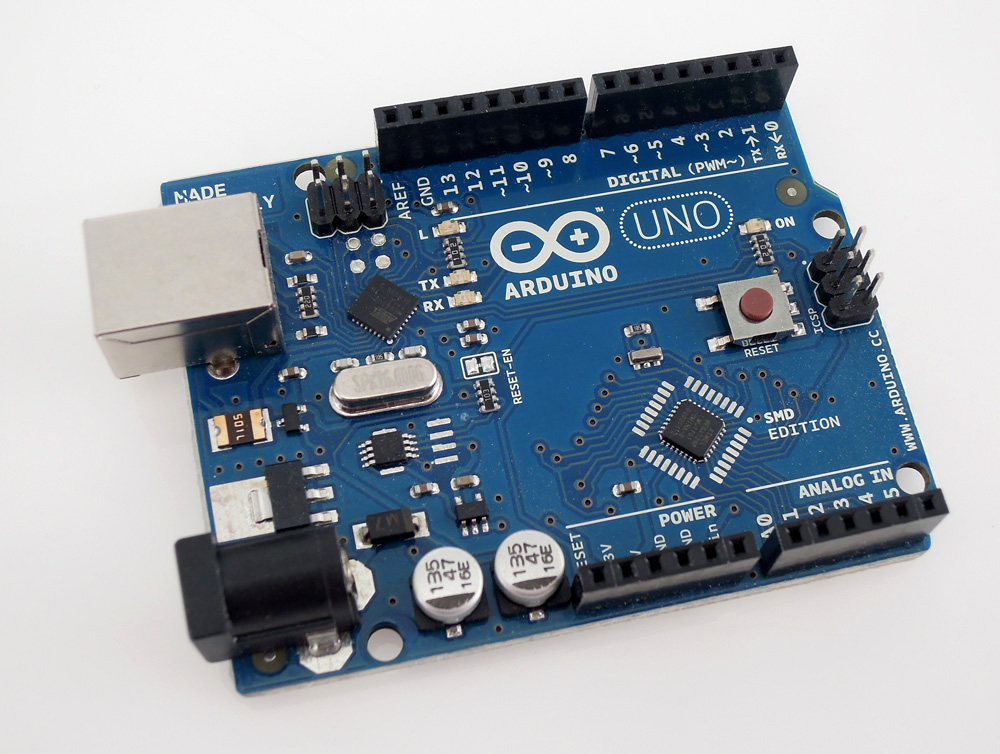
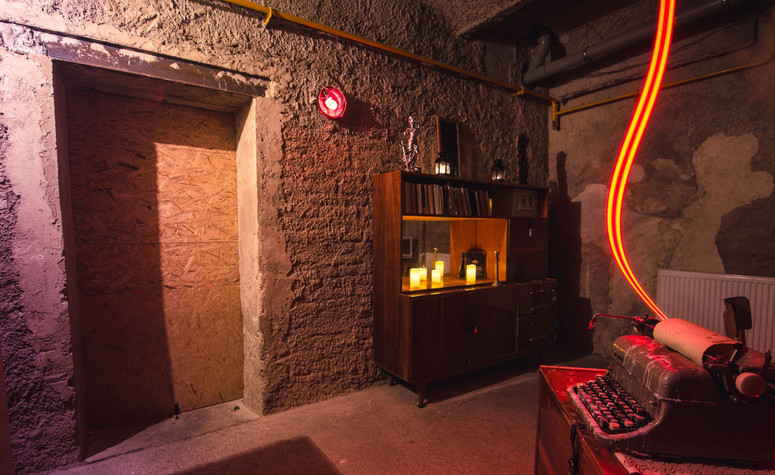
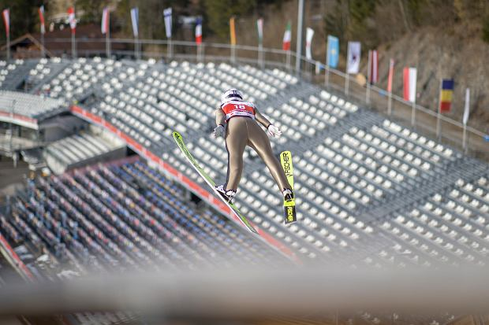

INFORMATYKA
Cyberbezpieczeństwo i kryptologia
Interesuję się wszelkimi rodzaju szyframi i kodami. Staram się być na bieżąco z najnowszymi technologiami. Z tego też powodu planuję zapisać się na drugi kierunek studiów: cyberbezpieczeństwo.
Chciałbym rozwinąć się w tej dziedzinie,
aby w przyszłości mieć dużą możliwość wyboru, a także, aby systemy przeze mnie projetkowane były bezpieczne.
Sztuczna inteligencja
W tej dziedzienie jeszcze nie wiem zbyt wiele. Jest to wciąż rozwijająca się gałąź informatyki, która zyskuje na popularności. Pojawia się już prawie wszędzie: w grach, medycynie, czy roźnego rodzaju urządzeniach.
Fascynuje mnie fakt,
że komputer jest w stanie się uczyć, a także rozpoznawać obrazy, mowę i inne wzorce. Niedługo komputer całkowicie będzie mógł zastąpić człowieka!
Arduino
Ostatnio zainteresowałem się technologią Arduino. Chcę zbudować własny escape room i jest to jedna z niezbędnych rzeczy. Odpowiada ona za mechanizmy elektroniczne. Jest to mini komputer, którą można odpowiednio zaprogramować.
Wygląda
on jak mała płytka, które przede wszytskim posiada wejścia, m.in. do podłączania róźnych czujników oraz wyjścia są podłączamy do urządzeń, którymi chcemy sterować.
Programowanie odbywa się w języku C. Za jego pomocą można stworzyć
np. sterownik rolet, oświetlenia, ogrzewania itd.

ZAINTERESOWANIA POZAINFORMATYCZNE
Siatkówka
Trenuję siatkówkę odkąd Polska wygrała Mistrzostwa Świata w 2014. Zaczynałem swoją przygodę na AWF. Aktualnie gram w klubie WKS Volley Wilczyce na pozycji przyjmującego, choć w trakcie kariery byłem także rozgrywającym.
Staram się
mieć kontakt z siatkówką bez przerwy. Często oglądam mecze w telewizji oraz chodzę na siatkówkę plażową niezależnie od pogody. Od czasu do czasu, uda mi się pojechać na mecz na żywo.
Escape roomy
Wkręciłem się w escape roomy całkiem niedawno. Jest to też całkiem nowy rodzaj rozrywki. Zostajesz zamknięty ze swoją drużyną w pokoju na godzinę i twoim zadaniem jest się z niego wydostać. W tym celu należy rozwiązywać liczne zagadki,
wykazać się sprytem, współpracą oraz spostrzegawczością Jest to zabawa dla osób w każdym wieku, na pewno nikt nie będzie się nudził.
Odwiedziłem już ponad 50 pokoi, także poza Wrocławiem. Trzykrotnie brałem udział w Mistrzostwach
Polski. Ostatnim razem, mojemu zespołowi niewiele zabrakło do finału.

Skoki narciarskie
Jestem zagorzałym fanem skoków i od lat oglądam tę dyscyplinę w telewizji. Przede wszytskim kibicuję naszym skoczkom, choć mam też swoich ulubieńcow z innych reprezetacji. Przy każdym konkursie, towarzyszą mi niesamowite emocje. Nie omijam
żadnego. Widziałem wiele skoczni, lecz niestety, jeszcze nie udało mi się pojawić od skocznią w trakcie zawodów.
Sam skaczę na nartach jedynie w grach.Na komórce mam ich mnóstwo, a na komputerze często gram w popularną grę DSJ4.
